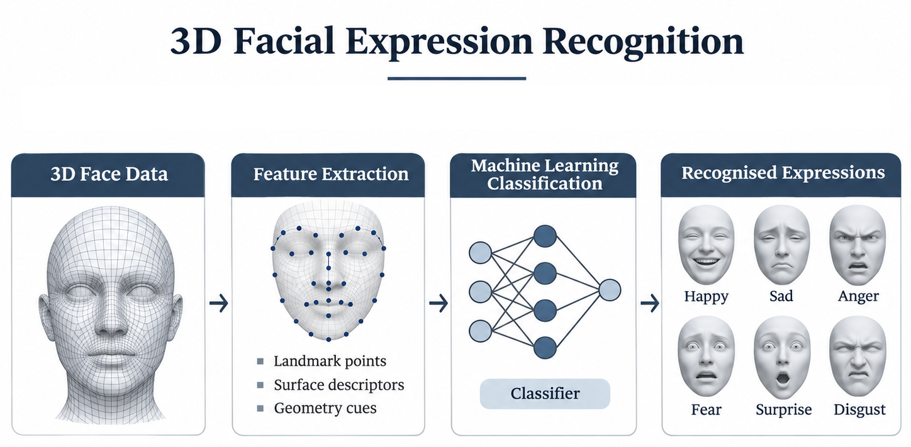
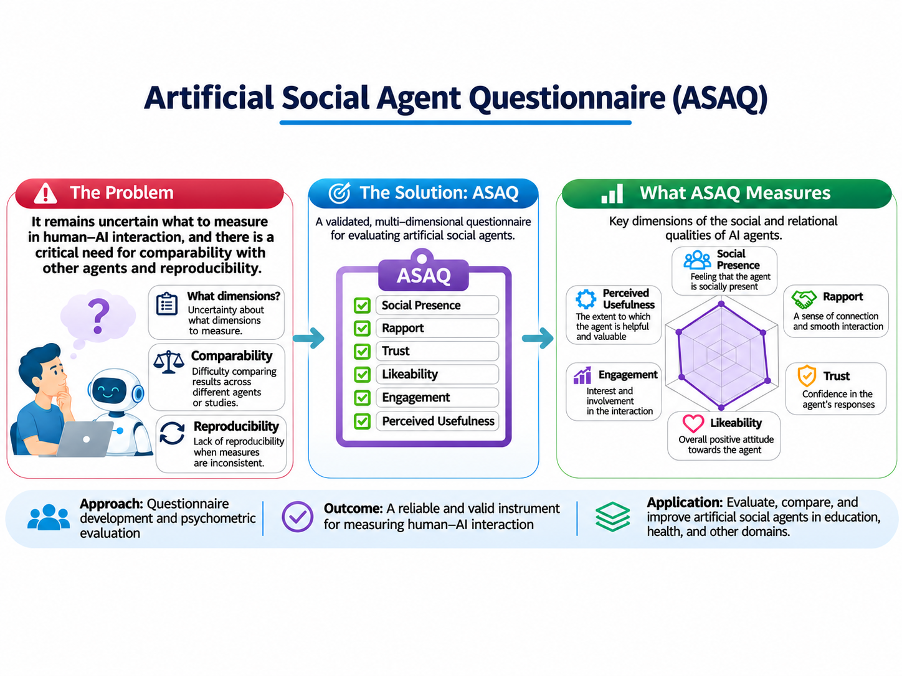
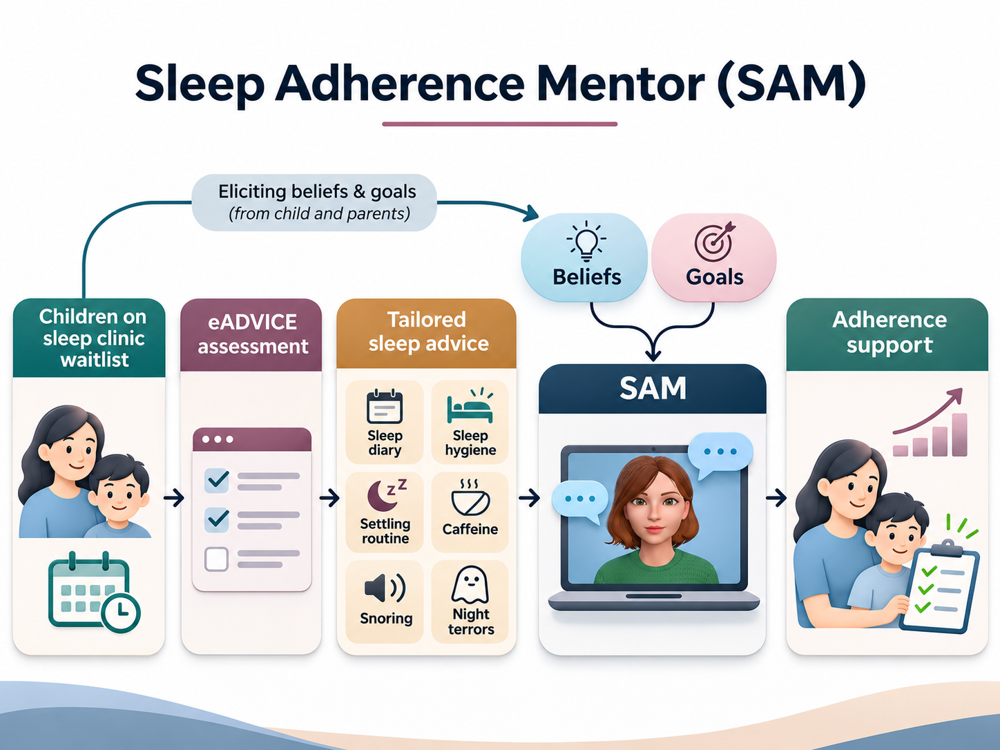
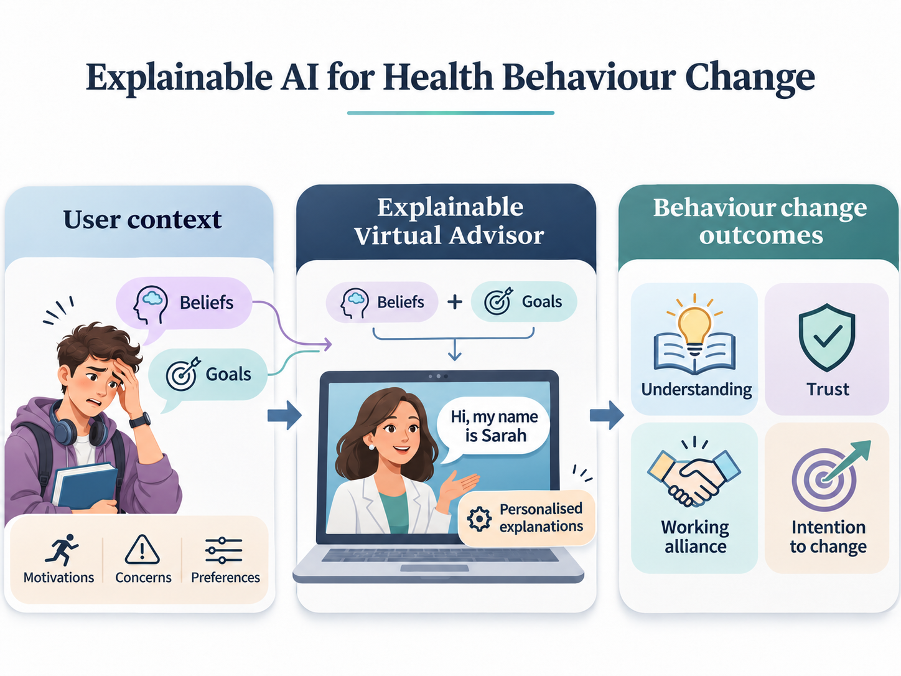
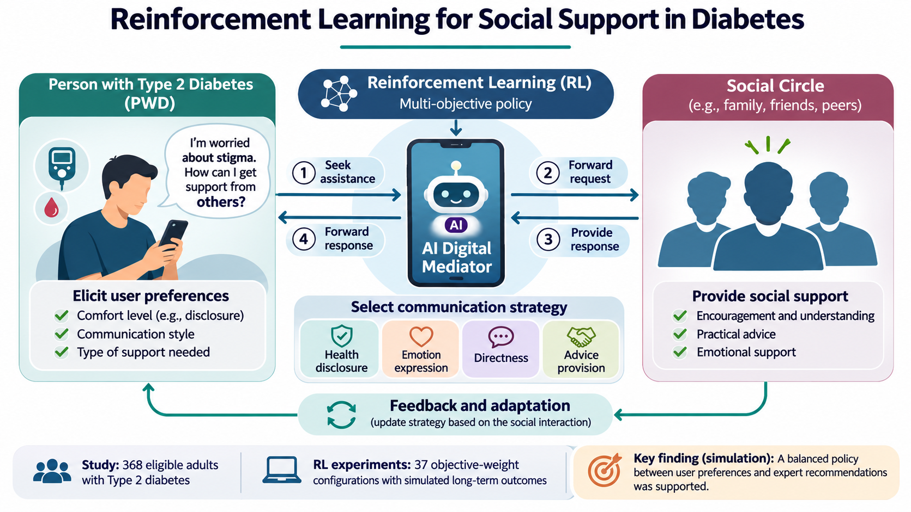
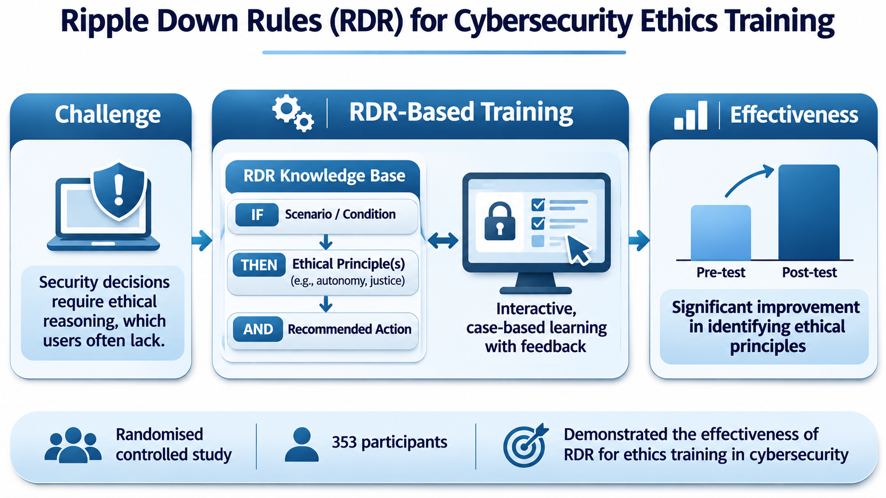

3D Facial Expression Recognition
Automatic recognition of facial expressions from 3D facial data using feature extraction and machine-learning classification.

Automatic recognition of facial expressions from 3D facial data using feature extraction and machine-learning classification.

This project developed and evaluated a multidimensional questionnaire for measuring users' perceptions of artificial social agents. The research addresses the lack of standardised evaluation measures, which limits comparability across agents and reproducibility of findings. The questionnaire provides a structured approach to assessing the social and relational qualities of human-agent interaction, supporting consistent evaluation and comparison of artificial social agents.

An explainable virtual conversational agent designed to support children with sleep disorders and their families while awaiting specialist care. Integrated with the eADVICE platform, SAM uses personalised conversations to understand users’ beliefs, goals, and barriers to following recommended sleep treatments, providing tailored explanations to encourage treatment adherence.

This project developed and evaluated an explainable Belief–Desire–Intention (BDI) conversational agent for health behaviour change. The agent models users’ beliefs, desires/goals, and intentions to generate personalised explanations and advice, aiming to improve understanding, trust, working alliance, and intention to change behaviour.

This project developed a reinforcement learning-based digital social mediator to help people with Type 2 diabetes seek support from their social networks. The algorithm learns communication strategies by balancing users' preferences with expert recommendations, considering health disclosure, emotional expression, directness, and advice provision. The research investigates how these strategies influence user satisfaction and long-term support-seeking behaviour.

This project investigated the use of Ripple Down Rules (RDR) to improve ethical reasoning in cybersecurity contexts. The approach combines case-based learning with rule-based reasoning to help users connect their decisions and justifications to underlying ethical principles. A randomised controlled study involving 353 participants demonstrated significant improvements in ethical principle identification compared with conventional training.

This project developed and evaluated a knowledge-graph-guided conversational agent that integrates curriculum-aligned knowledge with large language models and Socratic questioning to support structured learning. A randomised controlled trial involving 235 undergraduate students demonstrated significantly greater engagement, improved conceptual accuracy, and stronger adherence to course content compared with a general-purpose LLM chatbot. Conceptual understanding and task enjoyment remained comparable between conditions.